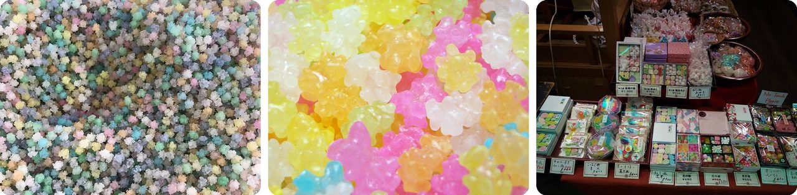
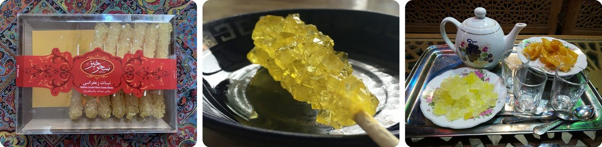
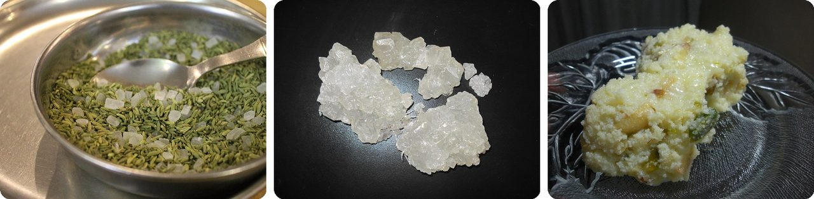
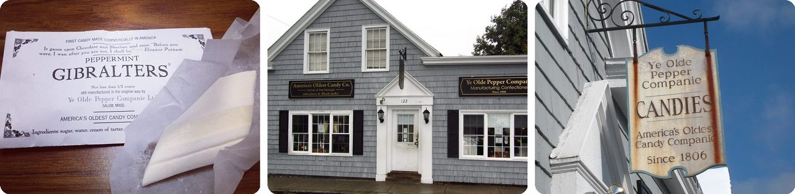

🌍 Top 10 Rock Candy
Nov 24, 2026
1. 🍬 The word "candy" started as a name for rock sugar
 Rock candy is just sugar grown into big crystals. You dissolve lots of sugar in hot water, more than cool water could ever hold. As it cools, the extra sugar has nowhere to go, so it sticks to a string or stick and builds crystals. It takes about six to seven days.
Rock candy is just sugar grown into big crystals. You dissolve lots of sugar in hot water, more than cool water could ever hold. As it cools, the extra sugar has nowhere to go, so it sticks to a string or stick and builds crystals. It takes about six to seven days.
People have done this for a very long time. Writers in the Muslim world described growing sugar crystals this way in the first half of the 800s, more than 1,100 years ago.
And here's the twist: the English word "sugar candy" came from Old French, which got it from Arabic qandi, from Persian qand ("cane sugar"), probably from the Sanskrit khanda ("piece of sugar"). Only later did "candy" grow to mean any sweet at all.
Basically, every candy is named after the crystal one.
2. 🇯🇵 Japan's army packs konpeitō in its ration tins

Konpeitō are tiny bumpy sugar stars from Japan, about 5 to 10 mm across, the size of a pea. Each one starts as a single grain of coarse sugar. Workers spin the grains in a big heated tub shaped like a gong and keep ladling syrup on, so they grow a little bigger every day.It's slow: one batch takes 7 to 13 days. That's why artisans still make them by hand today.
Japan's military emergency rations include them, packed with hard, dry bread. The rules even list the colors: 8 white, 3 red, 2 yellow and 2 green. The candy makes your mouth water, which helps you chew the dry bread.
Think of it as candy with a job.
3. 🇮🇷 In Iran, tea comes with a saffron rock candy stick

In Iran, the most common way to sweeten tea is nabat, rock candy grown on sticks or strings. The favorite flavor is saffron, which turns the crystals golden and a bit bitter. It's nibbled with tea or dropped in to sweeten it.Iran makes a lot of it. Most comes from Razavi Khorasan province, which in the 2020s made over 210,000 tons a year, as heavy as about 20 Eiffel Towers.
Next door in Central Asia, the same candy is called novvot. In Uzbekistan it's sometimes made with grape juice instead of water, and its crystals grow over three days. UNESCO has listed it as part of Uzbekistan's cultural heritage.
A sugar spoon you never have to wash.
4. 🇨🇳 A Chinese legend says rock sugar cured an emperor's sick consort
 Tanghulu are shiny candied hawthorn berries on a bamboo stick, a classic street snack in northern China. Their other name is bīngtáng húlu (冰糖葫芦). Bīngtáng is rock sugar, and húlu means gourd, for the lumpy gourd-like shape of the stick.
Tanghulu are shiny candied hawthorn berries on a bamboo stick, a classic street snack in northern China. Their other name is bīngtáng húlu (冰糖葫芦). Bīngtáng is rock sugar, and húlu means gourd, for the lumpy gourd-like shape of the stick.
The legend goes back to the Song dynasty, about 800 years ago. An emperor's favorite consort got sick and wouldn't eat. A doctor told the cooks to cook hawthorn with rock sugar and have her eat five to ten before each meal. In a few days she got better, and people started selling the berries on sticks in the street.
In old China, rock sugar was a luxury only rich families could afford. Today it's a normal kitchen item there, used in tea, sweet soups and cooking.
In other words, a royal medicine became a street snack.
5. 🇩🇪 In East Frisia, you never stir your tea
 East Frisia, a coastal region in northwest Germany, is crazy about tea: it drinks nearly 75% of all the tea brought into Germany. And it has strict rules for how to drink it.
East Frisia, a coastal region in northwest Germany, is crazy about tea: it drinks nearly 75% of all the tea brought into Germany. And it has strict rules for how to drink it.
First, a lump of white rock sugar called a Kluntje goes into the empty cup. Then hot, strong tea is poured over it. Then a spoon of thick cream goes on top and blooms into a "cloud" called a Wölkje. The cream is the cloud, the tea is the water, and the sugar is the land.
Then you drink it without stirring, so you get three layers: cream first, then tea, then sweetness at the bottom. Stirring would mix them into one, which is the wrong way to do it. The Kluntje melts so slowly that it can sweeten more than one cup.
Basically, it's a three-course meal in a teacup.
6. 🇬🇧 The letters in Blackpool rock aren't made in order
 British seaside rock is a different sweet from rock candy. It's a hard stick of boiled sugar, usually peppermint, with the town's name running all the way through it, so you can still read it after every bite. In the 1830s, Morecambe became the first town to make rock with letters inside.
British seaside rock is a different sweet from rock candy. It's a hard stick of boiled sugar, usually peppermint, with the town's name running all the way through it, so you can still read it after every bite. In the 1830s, Morecambe became the first town to make rock with letters inside.
Each letter starts out about the size of a thumbprint, made from strips of colored and white sugar. They aren't made in spelling order. "Square" letters like B, L and K go first because they keep their shape. Round letters like O and C are made last so they don't sag.
The letters are lined up around a white center and wrapped into one huge warm bar, too thick to get your hands around. A worker then stretches it out into a long, thin rope, and the letters shrink to their tiny final size. All lettered rock is still made by hand.
Think of it as writing a word and then stretching it into a candy.
7. 🏴 Edinburgh rock was supposedly discovered by forgetting it
 Edinburgh rock isn't hard at all. It's soft and crumbly, made from sugar, water and cream of tartar, and comes in pastel sticks in flavors like ginger and lemon.
Edinburgh rock isn't hard at all. It's soft and crumbly, made from sugar, water and cream of tartar, and comes in pastel sticks in flavors like ginger and lemon.
It was first made in the 1800s by Alexander Ferguson, known as "Sweetie Sandy." A popular story says he found a tray of sweets that had been forgotten for months. They had dried out, he tasted one, and it was delicious. Nobody knows if that's true.
What is true: it sold so well that he went home to his small town of Doune a very rich man. A plaque there says he bought up most of the street where he was born, and it became known as Sweetie Lane.
A happy accident you can eat.
8. 🇮🇳 A Delhi sweet shop has sold rock-sugar sweets since 1790

In India, rock sugar is called mishri. People eat it like candy or use it to sweeten milk and tea. It's also cooked into milk sweets with khoya (milk boiled down until it's thick), like mishri-mawa, also called kalakand.One sweet shop in Delhi, Ghantewala Halwai, started out selling mishri-mawa in 1790, more than 230 years ago. Today it sells 40 different kinds of sweets made with mishri.
These milk sweets are most popular in northern and western India, in places like Delhi, Rajasthan, Punjab and Gujarat.
In other words, one shop has been selling the same sweet for over 230 years.
9. 🇺🇸 America's first factory-made candy came from a shipwreck

In 1806, the Spencer family moved from England to Salem, Massachusetts, but a shipwreck left them with almost nothing. Their new neighbors chipped in with supplies, including a barrel of sugar, because Mrs. Spencer was known as a good candy maker.She made lemon and peppermint hard candies called Gibraltars and sold them on the steps of the town's First Church. They sold so well that she bought a horse and wagon to sell them in nearby towns. Gibraltar rock is called the first candy made commercially (for sale as a business) in the United States.
Hard candy keeps forever if it stays dry, so ship captains carried Gibraltars to ports around the world. Salem's Ye Olde Pepper Companie still sells them today.
So America's candy business started with a gift from the neighbors.
10. 🎵 "Big Rock Candy Mountain" was first a song about running away
 "The Big Rock Candy Mountains" is a folk song about a hobo's dream world, a wandering worker who rode freight trains. Harry McClintock said he wrote it in 1895, and he recorded it in 1928.
"The Big Rock Candy Mountains" is a folk song about a hobo's dream world, a wandering worker who rode freight trains. Harry McClintock said he wrote it in 1895, and he recorded it in 1928.
The version he first sang on the street in the 1890s was darker. It told of a child being talked into the hobo life with tales of the rock candy mountain. He cleaned it up before recording it.
Then it got cleaned up again for kids. In children's versions, the "cigarette trees" became peppermint trees, the streams of alcohol became lemonade, and the lake of whiskey became soda pop. A kids' version by Burl Ives in 1949 made it famous.
A grown-up song that got turned into a candy-land lullaby.
Fun fact
Konpeitō once helped open doors in Japan. In 1569, a Portuguese missionary named Luís Fróis gave the warlord Oda Nobunaga a glass flask of konpeitō to win permission to spread Christianity. Centuries later, the candy was so beloved that in Japanese, the Sugar Plum Fairy from Tchaikovsky's ballet The Nutcracker became Konpeitō no Sei (金平糖の精), "the Fairy of Konpeitō." The sweets hidden in The Nutcracker, from sugar plums to marzipan, are a whole world to explore next.
Photo credits (Wikimedia Commons)
- #1: Kandiszucker -- 2018 -- 3588.jpg by Dietmar Rabich, CC BY-SA 4.0
- #1: Rock-Candy-Sticks.jpg by Evan-Amos, CC BY-SA 3.0
- #1: Rock candy (flickr) by Biker Jun, CC BY-SA 2.0
- #2: Konpeito Candy.jpg by Islandsislands, CC0
- #2: #012 Konpeito taken by EX-Z40 (flickr) by aki.sato, CC BY-SA 2.0
- #2: Konpeito, Nishiki Market.jpg by Owleksandra, CC BY-SA 4.0
- #3: Iranian nabat.jpg by Teardrops777, CC BY 4.0
- #3: Saffron rock candy.jpg by Rye-96, CC BY-SA 4.0
- #3: Tea time at historic Chah-e Haji Mirza Café in Isfahan. Persian tea served with goshe fil and nabat.jpg by EiersalatmitGurken, CC0
- #4: TangHuLu.JPG by Popo le Chien, CC0
- #4: Guangxi old rock candy.jpg by Fumikas Sagisavas, CC0
- #4: Tanghulu-shanghai.jpg by Zhu Jian / Flickr user: zhu4905jian ( https://www.flickr.com/photos/7672101@N06/ ), CC BY 2.0
- #5: Tee mit sahnewolke.JPG by Ke.We., CC BY 3.0
- #5: Ostfriesentee.jpg by Frank van Anken, CC BY-SA 3.0
- #5: Kandiszucker -- 2018 -- 3590.jpg by Dietmar Rabich, CC BY-SA 4.0
- #6: Blackpool Rock (15107520364).jpg by Hazel Scott from Sheffield, UK, CC BY 2.0
- #6: Blackpool Rock (flickr) by Kate C Hopkins, CC BY 2.0
- #6: Brighton Rock (6950629923).jpg by Paul Hudson from United Kingdom, CC BY 2.0
- #7: Edinburgh Rock.jpg by The original uploader was Mebanana at English Wikipedia., Public domain
- #7: Ferguson's Edinburgh Rock advertisement (1982).JPG by Kim Traynor, CC BY-SA 4.0
- #7: Sweetie Lane heritage plaque.jpg by LocalMapEditor, CC BY-SA 4.0
- #8: Fennel seeds and rock sugar, Indian aftermint.jpg by Connie Ma from Chicago, United States of America, CC BY-SA 2.0
- #8: Misri.JPG by Miansari66, Public domain
- #8: Kalakand2.JPG by Pradeep717, CC BY-SA 3.0
- #9: Gibralters Candy Wrapper.jpg by Eanalla, CC0
- #9: Ye Olde Pepper Company, 122 Derby St, Salem (493760) (flickr) by Bob Linsdell, CC BY 2.0
- #9: Ye Olde Pepper Companie (flickr) by Kate C Hopkins, CC BY 2.0
- #10: Big Rock Candy Mountain Marysvale Utah 19970724.jpg by Jstuby, CC0
- #10: Big Rock Candy Mountain (19546490).jpg by Liji Jinaraj from San Francisco, USA, CC BY-SA 2.0
- #10: Big Rock Candy Mountian - panoramio.jpg by hakkun, CC BY-SA 3.0


.jpg){kind=link}
.jpg){kind=link}

.JPG){kind=link}


.jpg){kind=link}